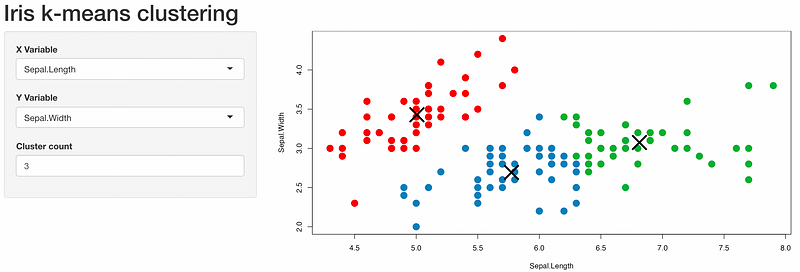

# start the framework
golem::create_golem('path_to_golem_app')
# activate renv
renv::activate()
# install dependencies
install.packages(c('golem', 'shiny')
# start template app
golem::run_dev()
In the first part we saw how we can hit the ground running when developing a Shiny app. In this part we will have a look at how we can structure our code base. Note that for this simple app we will not use modules. I will introduce modules in another article. The main topics we will introduce in this article are golem and modules. This article is not meant to be a guide on either of those two techniques. However, I will explain the most important concepts.
The set up
Now we have enough information to start coding your app. You want to start with solid foundations, so make sure you have read my article about setting up R projects. In particular you should:
- Create a repository. In fact, more than one. You will want one repository for the front-end, and one for the backend. This allows you to test things independently, re-use the logic, and have smoother deployments. Since the app in our example is very small, we will use only one repository.
- Use renv.
I would suggest you start with the business logic. Abstract the logic from the app, and create a package for it. In this example we are not using a separate package for the business logic because the app is extremely simple.
golem
Once you have the business code ready, you can get started with the front-end. But how can you organize your R Shiny code base?
You have two options:
- Use golem. golem is an excellent framework that can give you the skeleton of a well structured Shiny app with just one line of code: golem::create_golem().
- Create an equivalent structure manually. golem uses the standard structure of an R package. You can follow this article to get started. However, I do recommend you spend some time familiarizing yourself with golem, as it will make your life a lot easier.
In this example I will use golem, but the final result should be the same regardless of the approach you use.
To get started, all you need to do is call golem::create_golem(‘my_path_for_the_golem_app’). This will start the golem framework in the path you specify. I strongly suggest you also activate renv right now. You can start the golem app template with golem::run_dev().
golem will create a structure like this one.
.
├── .Rprofile
├── .gitignore
├── R
│ └── [...]
├── inst
│ └── [...]
├── dev
│ └── [...]
├── man
│ └── [...]
├── README.md
├── renv
│ └── [...]
├── renv.lock
└── thisArticleProject.RprojThe main folders we need to worry about are R, inst, and dev.
R
In this folder you find the main app code. Specifically you will find 4 files:
- app_server.R. This is the server logic of the app: what the UI elements do and how they interact with each other.
- app_ui.R. This is the UI logic of the app: which UI elements are used, and where they are.
- app_config.R. Configuration parameters used by the app and golem. For basic usage, you don’t need to worry about this.
- run_app.R. This can be used to initialize the app.
For this app, we only need to worry about app_server.R and app_ui.R.
inst
In agreement with R standards, init contains “extra” files. In the default golem app, these include the YAML configuration file and the favicon. We do not use this folder for this app.
dev
This is essentially a practical guide to the different steps of developing a golem app, from start to deployment. We do not use this folder for this app.
Customizing our app
Now we can start to modify the existing ui and server functions. We are going to use this R Shiny demo app as our starting point.
#####
## Server logic.
#####
#' The application server-side
#'
#' @param input,output,session Internal parameters for {shiny}.
#' DO NOT REMOVE.
#' @import shiny
#' @noRd
app_server <- function(input, output, session) {
# Define the required reactive values
rV <- reactiveValues(selectorsPanelResults = NULL)
# call the selectors module
rV$selectorsPanelResults <- mod_selectorsPanel_server('selectorsPanel_mod')
# the plot logic
output$plot1 <- renderPlot({
# create colours for the 9 possible clusters
palette(c("#E41A1C", "#377EB8", "#4DAF4A", "#984EA3",
"#FF7F00", "#FFFF33", "#A65628", "#F781BF", "#999999"))
# plot
par(mar = c(5.1, 4.1, 0, 1))
plot(rV$selectorsPanelResults()$selectedData,
col = rV$selectorsPanelResults()$clusters$cluster,
pch = 20, cex = 3)
points(rV$selectorsPanelResults()$clusters$centers, pch = 4, cex = 4, lwd = 4)
})
}######
## UI logic.
#####
#' The application User-Interface
#'
#' @param request Internal parameter for `{shiny}`.
#' DO NOT REMOVE.
#' @import shiny
#' @noRd
app_ui <- function(request) {
tagList(
# Leave this function for adding external resources
golem_add_external_resources(),
# Your application UI logic
pageWithSidebar(
headerPanel('Iris k-means clustering'),
sidebarPanel(
mod_selectorsPanel_ui('selectorsPanel_mod')
),
mainPanel(
plotOutput('plot1')
)
)
)
}
#' Add external Resources to the Application
#'
#' This function is internally used to add external
#' resources inside the Shiny application.
#'
#' @import shiny
#' @importFrom golem add_resource_path activate_js favicon bundle_resources
#' @noRd
golem_add_external_resources <- function() {
add_resource_path(
"www",
app_sys("app/www")
)
tags$head(
favicon(),
bundle_resources(
path = app_sys("app/www"),
app_title = "mediumApp"
)
# Add here other external resources
# for example, you can add shinyalert::useShinyalert()
)
}Modules
Note that we have made one major change from the original: we have added a module to enclose the left panel. We did so that in part 3 of this series we can show how to test Shiny server functions.
Shiny models are special functions encapsulating functionalities. In our app, we encapsulated in a module the left hand-side selectors.
The easiest way to create the backbone of a module is to call the function golem::add_module(<“my_module_name”>).
The module is contained in a file called mod_selectorsPanel.R. The prefix mod_ tells us that the file contains a module. Inside the file we find both the UI and the server function. Those functions have the same name as the file, with the added suffix _ui or _server. What happens inside those functions is simple. We monitor the inputs and update the data.frames selectedData and clusters at every change. The two data.frames are returned to the main app_server.R. Note how the module is called as any other normal function: mod_selectorsPanel_server(). The argument passed to the function is the name of the session id where the namespace is created.
#' selectorsPanel UI Function
#'
#' @description A shiny Module.
#'
#' @param id,input,output,session Internal parameters for {shiny}.
#'
#' @noRd
#'
#' @importFrom shiny NS tagList
mod_selectorsPanel_ui <- function(id){
ns <- NS(id)
vars <- setdiff(names(iris), "Species")
tagList(
selectInput(ns('xcol'), 'X Variable', vars),
selectInput(ns('ycol'), 'Y Variable', vars, selected = vars[[2]]),
numericInput(ns('clusters'), 'Cluster count', 3, min = 1, max = 9)
)
}
#' selectorsPanel Server Functions
#'
#' @noRd
mod_selectorsPanel_server <- function(id){
moduleServer( id, function(input, output, session){
rV <- reactiveValues(selectedData = NULL,
clusters = NULL)
ns <- session$ns
# update the required datasets whenever one of inputs changes.
observeEvent(list(input$xcol, input$ycol, input$clusters),{
# make sure that the selectors have been intialized and
# are not NULL
req(input$clusters)
req(input$ycol)
req(input$xcol)
rV$selectedData <- iris[, c(input$xcol, input$ycol)]
rV$clusters <- kmeans(rV$selectedData, input$clusters)
})
return(reactive(list(selectedData = rV$selectedData,
clusters = rV$clusters)))
})
}The UI and server functions of our module.
Run the app
Our app is now ready, and we can run calling golem::run_dev().

Conclusion
In this second part of the series we looked at how we can use golem to set up an app. golem adapts the structure of a standard R package to a Shiny app. golem also provides several utility functions to work with your app, including to initialize the app and to create modules.
Modules are special functions used to encapsulate related UI and server functionalities. Modules enable reusability and are testable.
In the next article we will look at how we can test the app.
Links
- The best guide on building Shiny apps: Enginnering Shiny.
- The first article of the series.